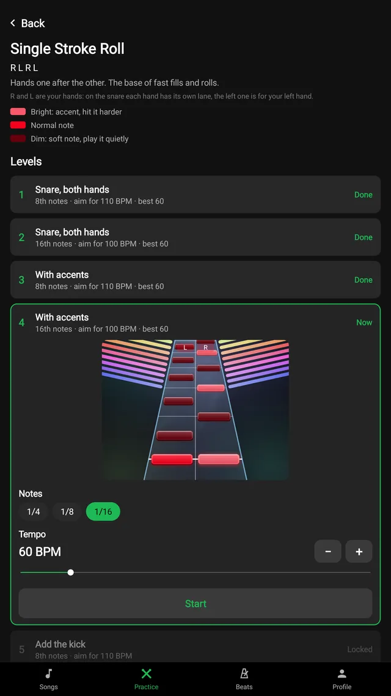

Drum rudiments for beginners
Rudiments are short sticking patterns, like scales for a piano player. They give you even hands, control and speed, and almost every fill you will ever play is built from them. You don't need all 40 standard rudiments. These eight cover most of what you'll use.
In the stickings below, R is your right hand and L your left. A capital letter in bold is an accent (hit harder), a small letter before a note is a grace note.
The first eight rudiments
1. Single stroke roll
R L R L R L R L
One hit per hand, alternating. The most-used rudiment of all: fills, fast hi-hat patterns and drum rolls. Aim for both hands sounding exactly the same.
2. Double stroke roll
R R L L R R L L
Two hits per hand. The second hit of each pair is usually the weak one, so make it as loud as the first. At slow tempos use two wrist strokes; as it gets faster, let the stick bounce for the second.
3. Single paradiddle
R L R R L R L L
Singles and doubles mixed ("para" = R L, "diddle" = R R). It switches the leading hand every four notes, which is why drummers love it for grooves and for moving around the kit. Accent the first note of each group.
4. Flam
lR rL lR rL
A quiet grace note just before a loud main note, so they sound like one fat note: "fl-AM". Keep the grace-note stick low (a couple of centimetres) and the main stick high.
5. Drag (ruff)
llR rrL llR rrL
Two quick grace notes before the main note. Common in marching and jazz, and a nice way to add colour to a snare hit.
6. Five stroke roll
R R L L R L L R R L
Two doubles and an accented single. A short, punchy roll that's perfect at the end of a fill.
7. Six stroke roll
R L L R R L
Accented single, two doubles, accented single. Played around the toms it becomes a classic rock fill.
8. Single stroke four (and seven)
R L R L / R L R L R L R
Groups of singles, often played as triplets. A building block for fast fills.
How to practise rudiments so you actually get faster
- Start very slow, around 60 BPM, eighth notes. Each stroke the same height and volume.
- Use a click. A rudiment that speeds up and slows down isn't learned yet.
- Raise the tempo in small steps (5 BPM or less), only after several clean repeats.
- Stop when it gets messy. Practising mistakes teaches mistakes. Go back down and play it clean.
- Lead with both hands. Play each rudiment starting with your left hand too.
- Move it around the kit. Once it's even on the snare, try the right hand on the hi-hat, or spread it across the toms. That's how rudiments turn into grooves and fills.
- Add your feet. Kick on every quarter note and hi-hat pedal on 2 and 4 underneath, for independence.
On HiHatGo! rudiments are on the Practice page, each with a ladder of levels: snare with both hands, then accents, then around the kit. You choose the tempo, accents show brighter and soft notes dimmer, and the app tells you if your accents are really louder.

How long until I'm fast?
With ten minutes of rudiments a day, most beginners see their clean tempo go up noticeably within a few weeks. The key word is clean: a slow rudiment played perfectly is worth more than a fast one played sloppily. Write down your best clean tempo for each rudiment, so you can see the progress.
Quick answers
Which drum rudiments should a beginner learn first?
Start with the single stroke roll, the double stroke roll and the single paradiddle. Then add the flam, the drag, and the five and six stroke rolls.
How do you practise drum rudiments to get faster?
Start very slow, around 60 BPM, with every stroke the same height and volume. Raise the tempo by 5 BPM or less, and only after several clean repeats. Write down your best clean tempo.
How long does it take to get fast at rudiments?
With about ten minutes of rudiments a day, most beginners see their clean tempo go up noticeably within a few weeks.